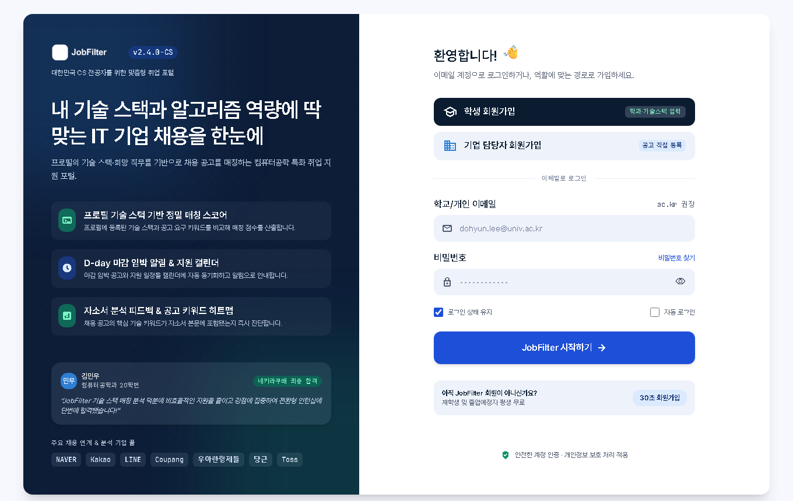
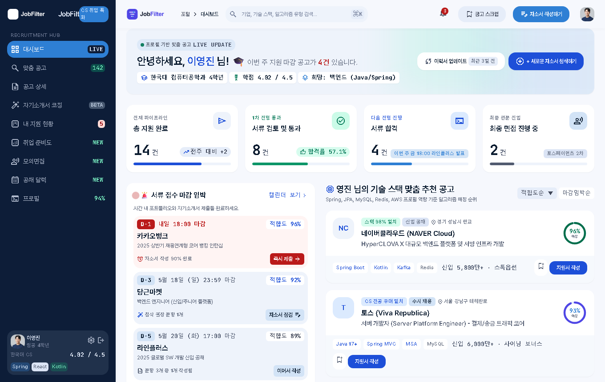
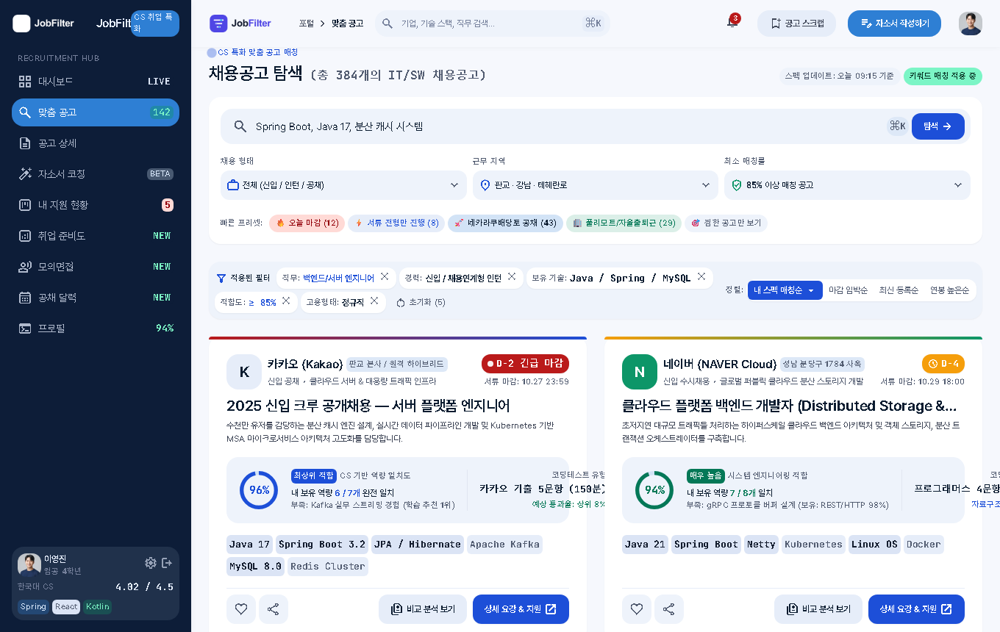
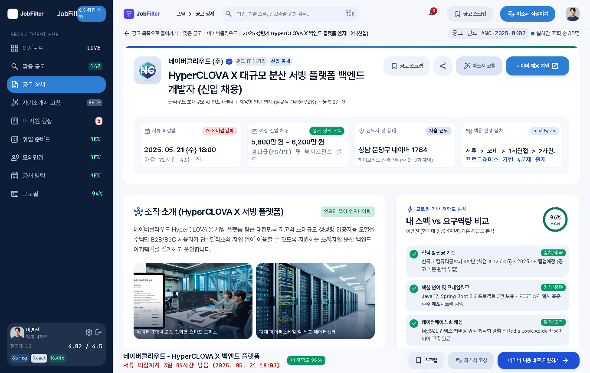
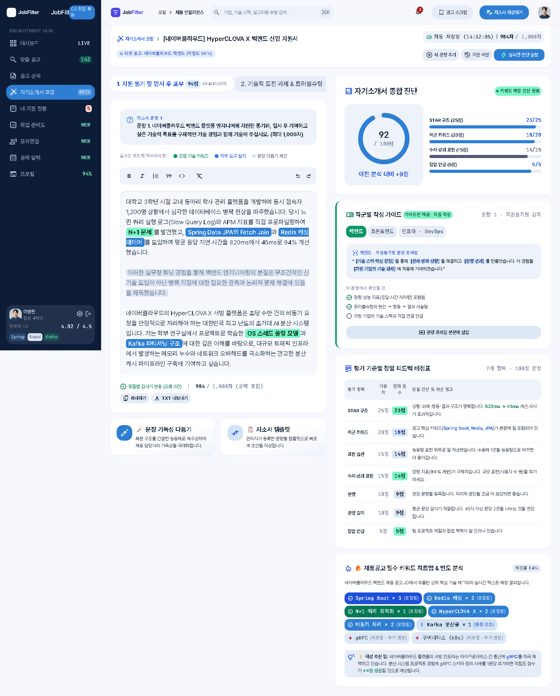
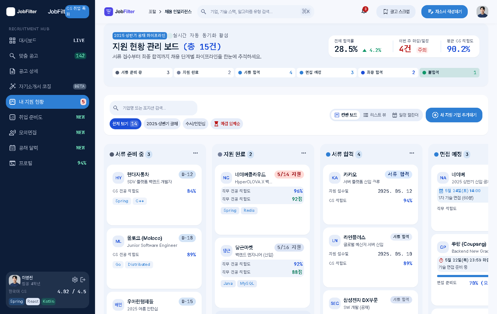
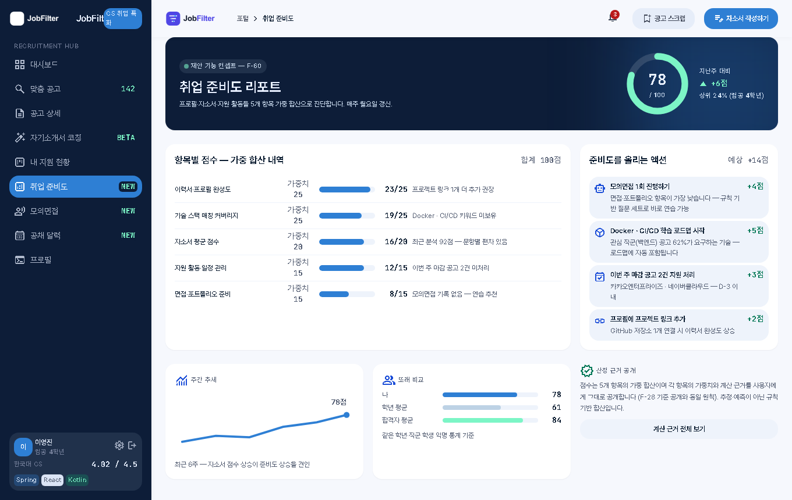
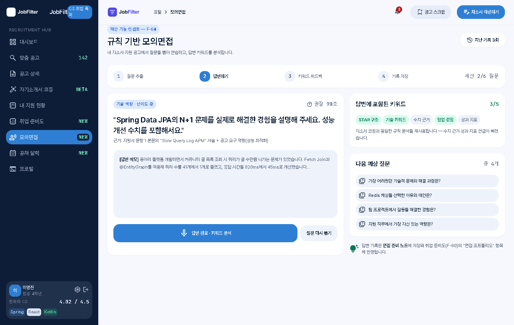
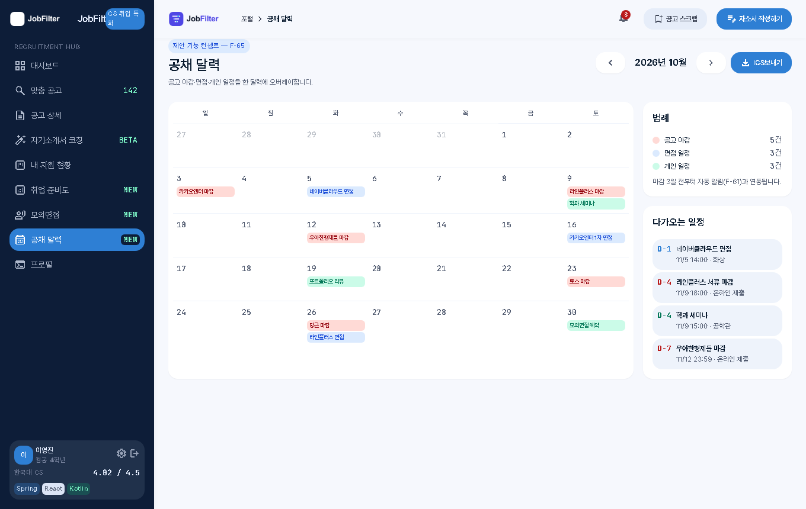
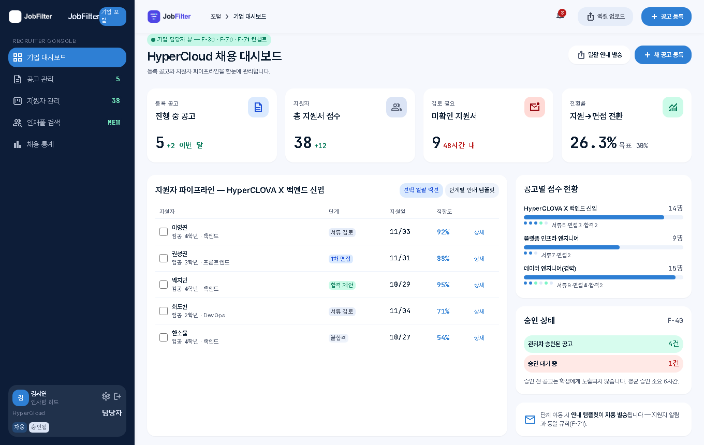

01login로그인
학교 이메일(ac.kr) 인증과 GitHub 로그인. 학생/기업 회원가입 버튼, 비밀번호 보기 토글, "시작하기" → 대시보드 이동.

02grid_view학생 대시보드
지원 현황 파이프라인 · 마감 임박 공고 · 맞춤 추천 · 자소서 완성도 91점 카드. 카드 클릭 시 상세, 리포트 버튼은 코칭 화면으로 이동.

03search공고 목록
검색 실시간 필터링 · 필터 칩 X 삭제 · 초기화(N). 카드별 "비교 분석 보기"로 2~3개 공고를 골라 나란히 비교하는 F-63 시연 포함.

04description공고 상세
스크랩 토글 · 공유 · 칸반 추가 · "내 스펙 vs 요구역량" 적합도 대조와 부족 역량 → 학습 로드맵 연계까지 한 화면에서 시연.

05auto_fix_high자소서 코칭
문항 탭 전환 · 본문 복사 · TXT보내기 · 재분석. 평가 기준 7개 가중치 공개, 추천 키워드 칩 클릭 시 본문에 실제 삽입.

06view_kanban내 지원 현황 (칸반)
카드 드래그로 단계 이동 · 건수 자동 갱신 · 새 지원 기업 등록 모달. 리스트/캘린더 뷰 전환과 면접 준비 등 제안 기능 버튼 포함.

07analytics취업 준비도 리포트
프로필·기술스택·자소서·지원활동·면접준비 5개 항목의 가중 합산 점수. 개선 액션별 예상 점수 상승과 또래 비교까지 한 화면.

08record_voice_over규칙 기반 모의면접
내 자소서·지원 공고에서 질문 추출 → 답변 → 키워드 포함 여부 분석 → 기록 저장. 4단계 진행 표시와 다음 예상 질문 큐 포함.

09calendar_month공채 달력
공고 마감·면접·개인 일정을 한 월간 달력에 오버레이. 유형별 색상 범례, D-day 목록, ICS보내기 버튼 포함.

10corporate_fare기업 담당자 대시보드
등록 공고·지원자 수·전환율 카드, 지원자 파이프라인 표(체크박스 일괄 액션), 공고별 접수 현황과 승인 상태까지 기업 뷰 전체.
JOBFILTER CAPSTONE — UI/UX CONCEPT · FUNCTIONAL SPEC v3.3 · MVP: jobfilter-mvp.vercel.app